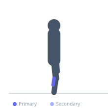

Exercise guide / Single-Leg Calf Raise
Single-Leg Calf Raise
The single-leg calf raise places the entire bodyweight on one calf at a time, dramatically increasing the load relative to the bilateral standing calf raise without requiring additional equipment. The greater per-leg load also facilitates a larger range of motion and addresses left-right strength imbalances. It is an effective and equipment-free progression for gastrocnemius and soleus development.
Primary muscles
gastrocnemius medial
gastrocnemius lateral
soleus
Secondary muscles
Stabilizers
tensor fasciae latae
Equipment
No Equipment (Bodyweight)


Starting position
- Stand with one foot on the edge of a step, the other leg lifted slightly with knee bent. Hold onto a support with one hand for balance.
Setup
- Use a stair, step, or raised plate for a heel drop. Hold a wall or rack lightly for balance. Dumbbell can be held in the same-side hand to increase load.
Steps
- Step 1: Stand on one foot on the edge of a step. Keep the other foot lifted off the floor.
- Step 2: Lower the heel as far below the step as possible — full gastrocnemius stretch.
- Step 3: Rise to the highest possible plantarflexion, pressing through the big toe.
- Step 4: Hold the peak contraction for one second.
- Step 5: Lower under control. Complete all reps then switch sides.
Coaching cues
- Press through the big toe — not the pinky
- Drop the heel all the way
- Full contraction at the top — don't cut it short
Breathing
- Exhale as you rise. Inhale as you lower.
Range of motion
- Maximum heel drop at the bottom; maximum plantar-flexion at the top.
Tempo
- 2-1-3-0
Common mistakes
- Rising through the outer edge of the foot rather than through the big toe
- Not allowing a full heel drop at the bottom
- Moving too fast — the calf responds well to slow, full-range reps
Safety
- If balance is challenging, hold the support more firmly initially
- Start with bodyweight before progressing to a weighted dumbbell
Training
- strength: 8–15 reps
- hypertrophy: 15–25 reps
- endurance: 20–40 reps
- strength: 3–4 sets
- hypertrophy: 3–5 sets
- endurance: 2–4 sets
- Rest: {'strength': 90, 'hypertrophy': 60, 'endurance': 30}